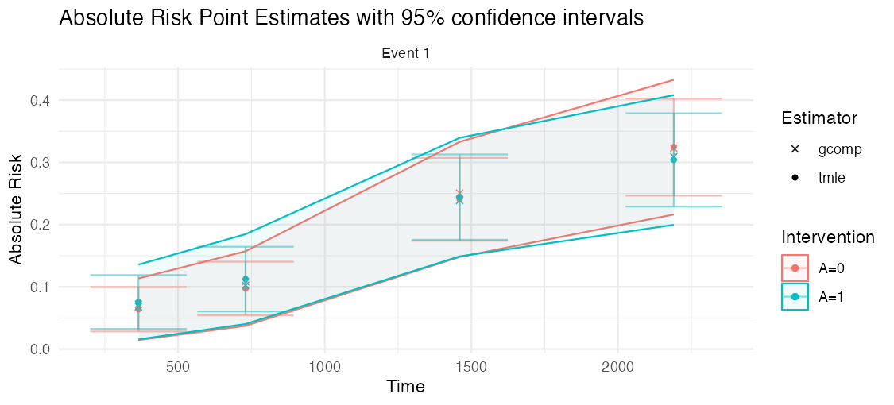

Continuous-Time Targeted Maximum Likelihood Estimation for Survival Analysis with Competing Risks
Description
concrete is an R package designed to use targeted maximum likelihood estimation (TMLE) to compute covariate-adjusted marginal cumulative incidence estimates in right-censored survival settings with and without competing risks.
concrete is intended to help trial analysts estimate clinically interpretable absolute risks, risk differences, and risk ratios at prespecified follow-up times while using flexible nuisance estimation and TMLE diagnostics.
What you get
The core output is a covariate-adjusted absolute-risk (cumulative incidence) curve for each intervention, with pointwise and simultaneous confidence intervals, plus the implied risk differences and risk ratios. The figure below is real output from the worked PBC example used in the quickstart.

How it works
concrete fits treatment and event/censoring hazards with cross-validated learners, forms a plug-in cumulative incidence, then applies a one-step TMLE update that targets the efficient influence function for each requested risk. The How concrete works article walks through each stage.

Installation
For standard use, we recommend installing the package from CRAN via
install.packages("concrete")You can install a stable release of concrete from GitHub via devtools with:
devtools::install_github("blind-contours/concrete")Start here for trial analyses
If you are testing concrete on a randomized trial or trial-like data set, start with these articles:
- Trialist quickstart: required data layout, a first intent-to-treat analysis, output interpretation, and checks to compare with standard trial summaries.
- Learner library guide: conservative Cox-only analyses, treatment Super Learner libraries, and the hazard learner options for Coxnet, random survival forests, additive hazards, and HAL.
- Convergence diagnostics: how to inspect empirical EIC diagnostics and what to try when the TMLE update does not converge cleanly.
- Testing protocol and current limitations: a built-in smoke test, a conservative-to-flexible testing ladder, and the current scope of supported trial data structures.
To understand the estimator and see how it performs:
- How concrete works: the target estimand, the efficient influence function, and the targeting loop, explained with diagrams.
- Simulation evidence: bias reduction, standard-error calibration, and confidence-interval coverage across four simulation scenarios.
The minimum data columns are a subject id, observed time, event type, binary treatment arm, and baseline covariates. Censoring should be coded as 0; event types should be positive integers. For competing risks, use one positive integer for the event of interest and other positive integers for competing events.
library(concrete)
library(data.table)
trial <- as.data.table(your_trial_data)
ConcreteArgs <- formatArguments(
DataTable = trial,
EventTime = "time",
EventType = "event",
Treatment = "arm",
ID = "id",
Intervention = makeITT(),
TargetTime = c(365, 730),
TargetEvent = 1,
CVArg = list(V = 5),
Verbose = FALSE
)
ConcreteEst <- doConcrete(ConcreteArgs)
ConcreteOut <- getOutput(
ConcreteEst,
Estimand = c("Risk", "RD", "RR"),
Intervention = c(1, 2)
)
ConcreteOut
getTmleDiagnostics(ConcreteEst, type = "components")Restricted mean survival time
For a collapsible, time-scale summary that does not depend on proportional hazards, getRMST() returns the covariate-adjusted restricted mean survival time (event-free time over the horizon), the cause-specific life-years lost, and their between-arm differences — each with influence-function confidence intervals and a Wald p-value. (Target every event type so the event-free RMST is identified, and use a reasonably dense TargetTime grid.)
ConcreteArgs <- formatArguments(
DataTable = trial, EventTime = "time", EventType = "event", Treatment = "arm",
ID = "id", Intervention = makeITT(), TargetEvent = c(1, 2),
TargetTime = c(365, 730, 1095, 1460), CVArg = list(V = 5)
)
ConcreteEst <- doConcrete(ConcreteArgs)
getRMST(ConcreteEst, Horizon = 1460, Intervention = c(1, 2))Example output (PBC data, 4-year horizon; values change with your data):
| Estimand | Event | Intervention | Pt Est | CI Low | CI Hi | pValue |
|---|---|---|---|---|---|---|
| RMST | – | A=0 | 1270 | 1220 | 1330 | |
| RMST | – | A=1 | 1270 | 1200 | 1330 | |
| RMST Diff | – | [A=1] − [A=0] | −8.1 | −91 | 75 | 0.85 |
| Life Years Lost | 1 | A=0 | 169 | 115 | 222 | |
| Life Years Lost | 1 | A=1 | 183 | 121 | 246 | |
| LYL Diff | 1 | [A=1] − [A=0] | 14.6 | −68 | 97 | 0.73 |
RMST Diff is the difference in mean event-free days over the horizon (here the arms are within ~8 days, CI −91 to 75). For sparse grids, rare events, or long horizons, targetRMST() targets the RMST estimating equation directly and is better conditioned.
targetRMST(ConcreteEst, Horizon = 1460, Intervention = c(1, 2))For how this compares to the established RMST tools (survRM2, eventglm, and riskRegression) — a worked toy trial with a known true RMST, a head-to-head bias/coverage table, a capability matrix, and an honest read on where concrete is at parity versus where it adds something — see Comparing RMST estimators.
Win ratio, win odds, and net benefit
For most trials the win ratio you want is the clinical, death-priority hierarchy: compare a random treated patient with a random control on the most serious event first — counting a higher-priority event even when it follows a lower-priority one (death after a hospitalization, a stroke after a hospitalization) — then break ties on the next tier. clinicalWinRatio() estimates it over an arbitrary ordered hierarchy of a terminal event (death) plus non-fatal events, with covariate-adjusted, doubly-robust, censoring-corrected influence-function inference (a Markov multistate model, each transition a Super Learner). Pass the non-fatal columns in priority order:
# death > stroke > hospitalization (non-fatal columns highest-priority first)
clinicalWinRatio(trial, arm = "arm", illness.time = c("t_stroke", "t_hosp"),
terminal.time = "t_term", terminal.status = "died",
covariates = c("age", "sex"), horizon = 1460)
#> Win Ratio / Win Odds / Net Benefit / P(win,loss,tie), each with an IF CIThe first-event getWinRatio() is the special case for when events are genuinely mutually exclusive (a higher-priority event can never follow a lower-priority one). It works off the targeted curves and supports a single TargetEvent or an ordered vector for a prioritized hierarchy of competing events:
ConcreteArgs <- formatArguments(
DataTable = trial, EventTime = "time", EventType = "event", Treatment = "arm",
ID = "id", Intervention = makeITT(), TargetEvent = c(1, 2),
TargetTime = c(365, 730, 1095, 1460), CVArg = list(V = 5)
)
ConcreteEst <- doConcrete(ConcreteArgs)
# single endpoint (event 1)
getWinRatio(ConcreteEst, Horizon = 1460, Intervention = c(1, 2), TargetEvent = 1)
# prioritized hierarchy: event 1 (e.g. death) outranks event 2 (e.g. hospitalization)
getWinRatio(ConcreteEst, Horizon = 1460, Intervention = c(1, 2), TargetEvent = c(1, 2))Example output (single endpoint, PBC data, 4-year horizon; values change with your data):
| Estimand | Pt Est | CI Low | CI Hi | pValue |
|---|---|---|---|---|
| Win Ratio | 1.10 | 0.85 | 1.42 | 0.46 |
| Win Odds | 1.08 | 0.89 | 1.31 | 0.44 |
| Net Benefit | 0.039 | −0.058 | 0.136 | 0.43 |
| P(win) | 0.421 | 0.362 | 0.480 | |
| P(loss) | 0.382 | 0.326 | 0.438 | |
| P(tie) | 0.197 | 0.151 | 0.243 |
A win ratio above 1 (and a net benefit above 0) favors the active arm; the win ratio’s CI crossing 1 is the test of no difference (here ~null, in line with the RMST result). P(win), P(loss), and P(tie) sum to 1. For a hierarchy, ties are resolved by the lower-priority events, so P(tie) shrinks and the comparison uses more of the data.
See the Win ratios for trialists article for when to use the single-event, prioritized-hierarchy, and clinical (death-priority) win ratios — the last via the experimental clinicalWinRatio(), which counts death even when it follows a non-fatal event — together with the simulation coverage evidence so the inference can be trusted.
To check that your installation works before using your own data, run the installed smoke test:
source(system.file("examples", "trialist-smoke-test.R", package = "concrete"))To also try optional learners that are installed locally:
Sys.setenv(CONCRETE_RUN_OPTIONAL_LEARNERS = "true")
source(system.file("examples", "trialist-smoke-test.R", package = "concrete"))Trial-design and regulatory toolkit
Beyond absolute risk, concrete ships a set of estimands and robustness analyses aimed at randomized trials and FDA / ICH E9(R1) reporting. The Trial-design and regulatory toolkit article walks through all of these on a worked example; the highlights are:
-
Cross-fitting (CV-TMLE). Pass
CrossFit = TRUEtoformatArguments()to fit the propensity and hazard nuisances out-of-fold. This removes the empirical-process (overfitting) term from the remainder, which is what makes influence-function inference valid when the nuisances are flexible machine-learning fits. -
Ensemble hazard Super Learner.
HazEnsemble = TRUEreplaces discrete cross-validated selection of a single hazard learner with a convex combination of the library, fit to minimize the cross-validated counting-process loss. -
Win ratio, win odds, and net benefit.
getWinRatio()turns the targeted survival curves into a covariate-adjusted, doubly-robust hierarchical comparison with influence-function confidence intervals. -
ICH E9(R1) estimands and intercurrent events.
makeEstimand()records the five estimand attributes;applyIntercurrentEvent()encodes treatment-policy, hypothetical (via censoring/IPCW), and composite strategies for competing or intercurrent events. -
Treatment switching (crossover): ITT vs per-protocol. Pass
Crossover(a column of per-subject switch times) to move from the intent-to-treat estimand to the hypothetical “no-switching” estimand: switchers are re-censored at their switch time and a separate crossover hazard is multiplied into the IPCW,1 / (S_dropout * S_crossover), removing the selection bias of naive per-protocol censoring. -
Time-varying covariates in the censoring model. Pass
CensoringTV(long-form post-randomization measurements — echo, KCCQ, six-minute walk) to condition the censoring (and, by default, crossover) hazard on the follow-up history, correcting informative dropout. These enter only the censoring/crossover hazards — never the outcome model — and the correction flows through every IPCW-based estimand (survival, cumulative incidence, RMST, win ratio). -
Censoring sensitivity (tipping point).
senseCensoring()runs a delta-shift sensitivity analysis on the independent-censoring (MAR) assumption and reports where conclusions would change. With a crossover model it can tip dropout and switching separately or jointly (mechanism = "dropout" / "crossover" / "all"), so each intercurrent-event assumption gets its own tipping point. -
Positivity diagnostics.
getPositivityDx()reports per-arm effective sample size, maximum weight, and truncation share, flagging when an IPCW estimand (especially the hypothetical no-switching one) rests on heavy extrapolation. -
Adjustment efficiency.
getRelativeEfficiency()reports the variance ratio of the covariate-adjusted estimator versus the unadjusted one.
# Cross-fitted, ensemble-hazard fit for ML-based nuisance estimation
ConcreteArgs <- formatArguments(
DataTable = trial, EventTime = "time", EventType = "event", Treatment = "arm",
ID = "id", Intervention = makeITT(), TargetTime = c(365, 730), TargetEvent = 1,
CVArg = list(V = 5), CrossFit = TRUE, HazEnsemble = TRUE
)
ConcreteEst <- doConcrete(ConcreteArgs)
# Hierarchical / composite comparison
getWinRatio(ConcreteEst, Horizon = 730, Intervention = c(1, 2))
# How much did covariate adjustment buy you? Compare adjusted vs unadjusted output
getRelativeEfficiency(
Adjusted = getOutput(ConcreteEst, Estimand = "RD", Intervention = c(1, 2)),
Unadjusted = getOutput(unadjusted_est, Estimand = "RD", Intervention = c(1, 2))
)
# Sensitivity to the independent-censoring assumption: impute an increasing
# fraction (delta) of censored subjects as events and see if conclusions hold
senseCensoring(ConcreteArgs, deltas = c(0, 0.05, 0.1, 0.15, 0.2), Estimand = "RD")
# Treatment switching: intent-to-treat vs the hypothetical "no-switching" estimand.
# `switch_time` is a column of per-subject crossover times (NA if never switched);
# the crossover hazard inherits the censoring covariates (incl. CensoringTV).
pp_args <- formatArguments(
DataTable = trial, EventTime = "time", EventType = "event", Treatment = "arm",
ID = "id", Intervention = makeITT(), TargetTime = c(365, 730), TargetEvent = 1,
Crossover = "switch_time" # add CensoringTV = tv for informative dropout
)
pp_est <- doConcrete(pp_args)
getOutput(pp_est, Estimand = "RD", TargetTime = 730) # hypothetical no-switching
# Always check positivity / effective sample size for an IPCW estimand:
getPositivityDx(pp_est)Advanced TMLE controls
The TMLE update can be configured through formatArguments(). The default stopping rule is the original relative empirical EIC criterion. For rare-event or competing-risk settings the relative threshold can become numerically tiny, so an absolute risk-scale rule is often more stable. A good first sensitivity is EICStopAbsTol = 0.02 / sqrt(n), which is also applied automatically if you select the "absolute" or "hybrid" rule without setting a tolerance:
ConcreteArgs <- formatArguments(
DataTable = data,
EventTime = "time",
EventType = "status",
Treatment = "trt",
Intervention = 0:1,
TargetTime = c(365, 730),
TargetEvent = 1,
UpdateMethod = "adaptive",
EICStopRule = "absolute",
EICStopAbsTol = 0.02 / sqrt(nrow(data))
)Use getTmleDiagnostics() on a fitted object to inspect final component-wise EIC ratios, the update trace, or the norm trajectory:
ConcreteEst <- doConcrete(ConcreteArgs)
getTmleDiagnostics(ConcreteEst, type = "components")
getTmleDiagnostics(ConcreteEst, type = "trace")Survival learner library
Hazard models can mix Cox formulas with optional survival learners. The following aliases are supported in Model[[event_type]]: "coxnet", "rsf" or "randomForestSRC", "aareg" or "additive_hazards", and "hal" or "hal9001".
Model <- list(
trt = c("SL.glm", "SL.glmnet"),
"0" = list(Cox = survival::Surv(time, status == 0) ~ .,
RSF = "rsf",
Aareg = "aareg"),
"1" = list(Cox = survival::Surv(time, status == 1) ~ .,
HAL = "hal")
)The optional learners require their corresponding packages when selected: glmnet for Coxnet, randomForestSRC for random survival forests, and hal9001 for HAL.
Issues
If you encounter any bugs or have any specific feature requests, please file an issue.